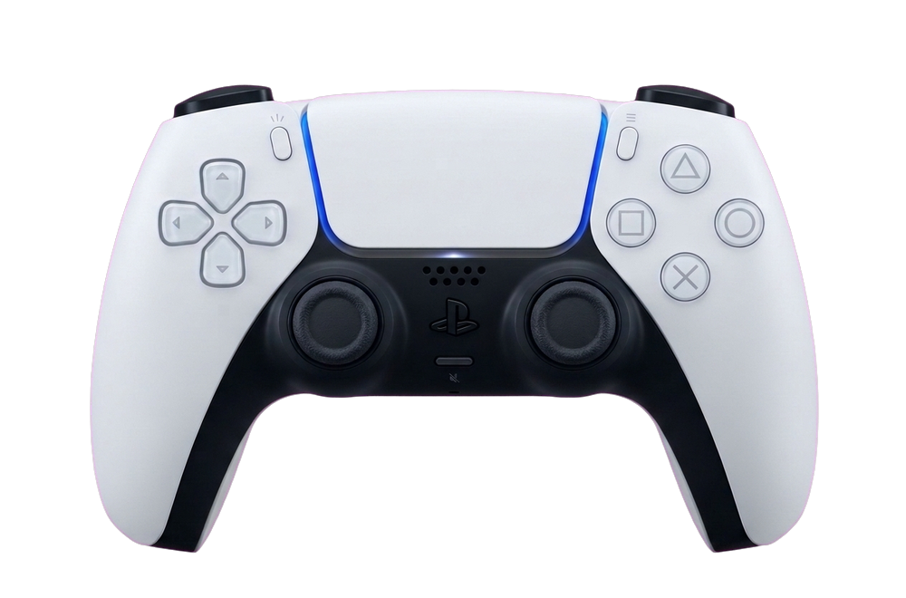
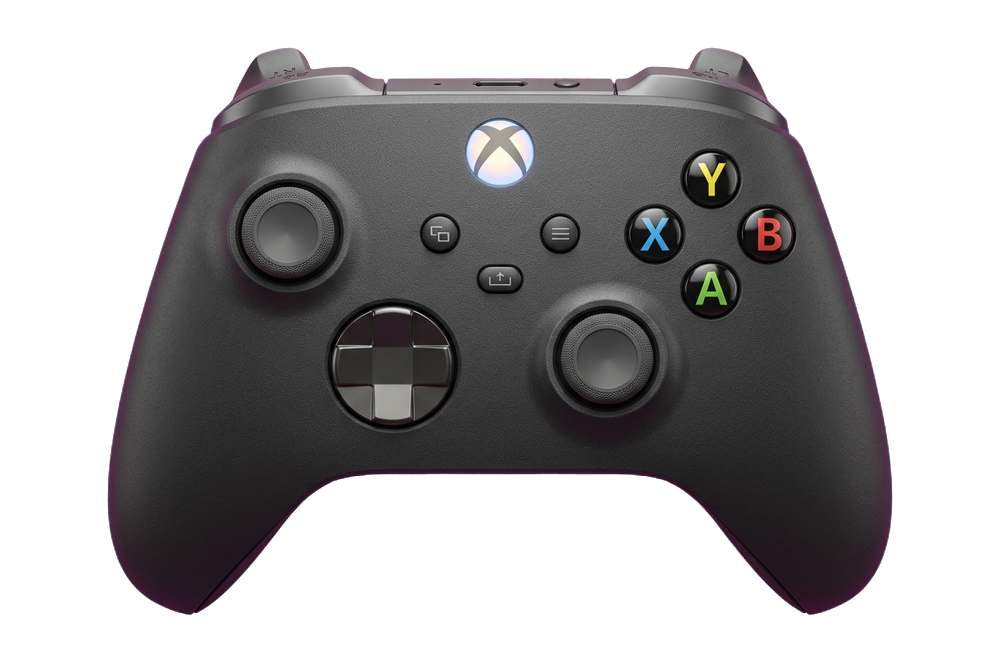

Control your entire Windows desktop from a game controller.
120 Hz dual-stick cursor physics, modifier layers, per-app sparse overrides, dual-motor haptics, Virtual Desktop switching, and Multi-PC LAN handoff — in a single portable executable.


120 Hz Precision Cursor Physics
Primary & precision analog sticks with radial deadzone, exponential response curve, flick boost, acceleration, smoothing, and subpixel accumulation via Win32 SendInput.
Dynamic Hardware Detection
Plug in or hot-swap DualSense, DualShock 4, or Xbox controllers and watch the 3D studio controller map, hotspots, labels, and haptics adapt instantly.
Modifier Layers & App Overrides
Hold LB/L1 or RB/R1 for alternate shortcut layers, plus automatic per-app overrides via GetForegroundWindow and a built-in Codex / ChatGPT starter.
7 Tactile Haptic Patterns
Dual-motor rumble with left/right handle locality routing, strength scaling, grab-and-release drag feedback, and connection pulses.
Multi-PC LAN Companion Mode
Seamlessly push your cursor across a screen edge to another Windows PC over LAN TCP/UDP with zero cloud dependencies.
Portable & macOS Profile Ready
Zero-install single .exe with atomic JSON profiles and automatic import conversion for macOS Vibe Controller GAPE.json profiles.